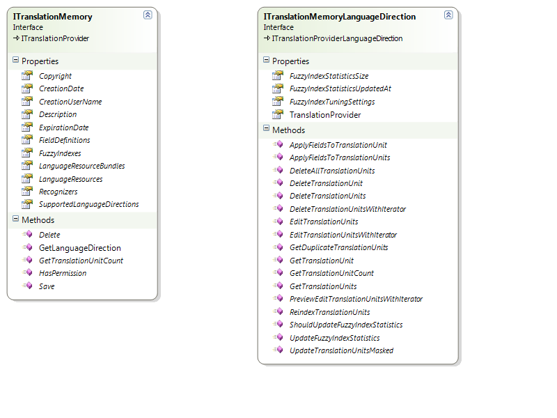

Introduction
This section describes how to work with translation memories, focusing on common functionality between file- and server-based translation memories. The Performing Translation Memory Lookups section describes use cases that are specific to server-based translation memories.
Overview
The Translation Memory API models a translation memory using the ITranslationMemory interface. A translation memory is essentially a specific type of translation provider (see ITranslationProvider), which exposes additional translation memory-specific functionality. For more information about translation providers, see Creating the Translation Provider.
ITranslationMemory represents a multilingual translation memory, i.e. a translation memory that can have one or more language directions. Each of the language directions are represented by a ITranslationMemoryLanguageDirection object, which exposes functionality specific to that language direction.

There are several implementations of the ITranslationMemory interface:
- File-based translation memory: a translation memory that is stored in a single file on disk, designed for single-user access. File-based translation memories only support a single language direction. For more information, see Working with File-based Translation Memories.
- Server-based translation memory: a translation memory that is hosted on a server and accessed via a WCF service. The translation memory data is stored in a central database (Microsoft SQL Server). For more information about server-based translation memories, see Introduction.
- In-memory translation memory:a lightweight translation memory implementation which data is only held in memory. This is designed for use is scenario's where there's a need for a relatively small and fast translation memory that does not need to be persisted.

In addition to the standard functionality supported by any translation provider, a translation memory has the following main aditional features:
- Field definitions: support for defining custom fields that allow associating custom meta-data with the translation units in the translation memory. This meta-data can then be used for filtering translation units during various operations. For more information, see Working with Field Definitions.
- Language Resources: support for storing custom language resources, such as segmentation rules, abbreviations, ordinal followers and variables. Storing these resources in the translation memory ensures that the correct resources are consistenly being used when segmenting content that is targeting the translation memory. This ensures consistent, optimal translation re-use. For more information about language resources, see Working with Language Resources.
- Import: translation memories support bulk import of translation units from TMX or other supported bilingual file formats. For more information, see Importing Content into a Translation Memory.
- Export: translation memories support exporting translation units to a TMX file. For more information, see Exporting Content from a Translation Memory. The ITranslationMemory interface provides management functionality that allows you to modify properties such as name and description, but also language directions, field and language resources. When making changes to any of these, you need to call Save in order to persist the changes.
See Also
Working with File-based Translation Memories
Working with Field Definitions
Working with Language Resources
Importing Content into a Translation Memory